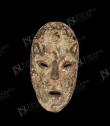

African Art Record
Lega Lukwakongo-Style Maskette
Lega-style, likely Lega peoples
This small Lega lukwakongo-type maskette has an elongated oval face, softly modeled surface, narrow almond-shaped eyes, short straight nose, small horizontal mouth, heavy wear, and traces of light pigment or kaolin. Its compact format suggests an object meant for close viewing and handling. The restrained features relate to Lega Bwami association maskettes.
Collection Context
Catalog framing
This record is published as part of the Jackson State University African Art Collection and remains distinct from the Department of Art permanent collection browse path.
High for Lega lukwakongo-type maskette based on visual features and close museum parallels, exact owner, grade, and teaching meaning are undocumented.
Object Description
Interpretive description
This small Lega lukwakongo-type maskette has an elongated oval face, softly modeled surface, narrow almond-shaped eyes, short straight nose, small horizontal mouth, heavy wear, and traces of light pigment or kaolin. Its compact format suggests an object meant for close viewing and handling. The restrained features relate to Lega Bwami association maskettes.